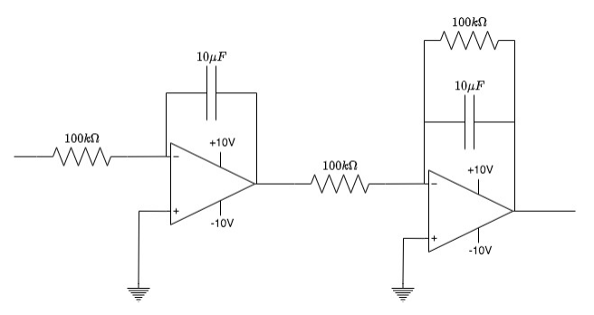
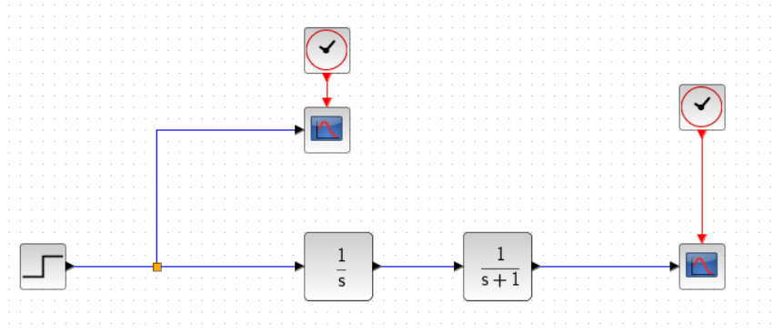
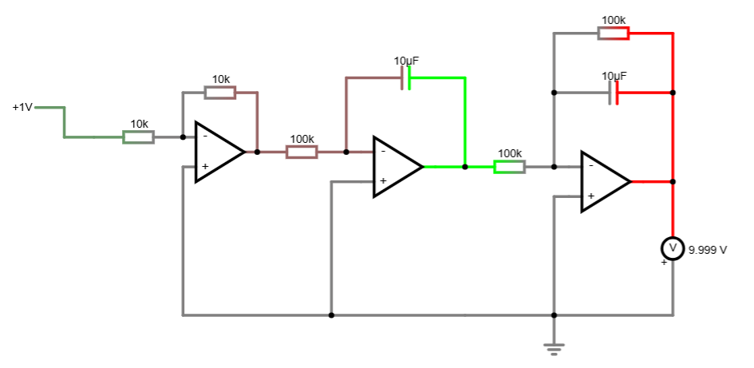
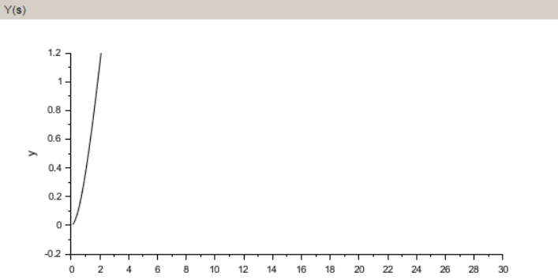
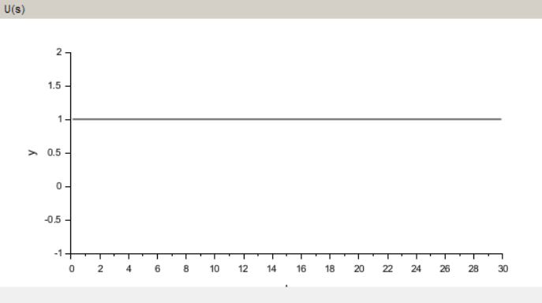

Projeto 3: Controle de Tensão de Saída com AmpOps
Abordagens: Clássica Polinomial e Espaço de Estados
Professor: Kurius Iuri Pineiro de Melo Queiroz
Alunos:
A atividade estabelece critérios estritos de resposta transitória para a regulação de tensão em malha fechada:

Figura 1: Esquema do circuito eletrônico analógico ativo.
O circuito original distribui-se em dois subblocos dinâmicos baseados em amplificadores operacionais ideais:
Considerando as premissas de curto-circuito virtual no AmpOp ideal, a corrente de entrada e a corrente da malha de feedback baseada em capacitor obedecem à Lei de Kirchhoff:
Igualando as correntes do nó inversor virtual ($i_{in}(t) = i_f(t)$) e aplicando a transformada de Laplace sob condições iniciais nulas:
Isolando a relação de ganho dinâmico do primeiro bloco operacional:
Os valores nominais dos componentes para este estágio são dados por:
Calculando o termo do denominador:
O segundo estágio possui uma impedância em paralelo ($R_3 \parallel C_2$) em seu ramo inversor ativo. Analisando as correntes elétricas nodais:
Substituindo as expressões associadas ao ramo paralelo no domínio complexo:
Igualando a corrente de entrada à corrente resultante do ramo de realimentação ($i_1(s) = i_f(s)$):
Isolando e organizando a função de transferência do filtro ativo:
Os componentes passivos nominais mapeados para o segundo bloco compreendem:
Efetuando as simplificações lineares de ganho e constante de tempo:
Dado o isolamento elétrico por impedância ideal, a planta global constitui o produto linear de ambos os blocos calculados:
O cancelamento algébrico dos sinais negativos fornece a dinâmica final de segunda ordem:




Para satisfazer o teto restritivo de sobressinal de $PO\% \le 16,31\%$ ($PO = 0,1631$):
Elevando ambos os lados ao quadrado para isolar o coeficiente:
A partir do teto para o tempo de assentamento no critério de acomodação de 2% ($T_{s2\%} \le 2\text{ s}$):
Substituindo o amortecimento $\zeta = 0,5$ previamente determinado:
Adota-se no limite exato da igualdade para conter o esforço de controle: $\omega_n = 4 \text{ rad/s}$.
Substituindo o par de parâmetros dinâmicos calculados ($\zeta=0,5$ e $\omega_n=4$) na forma padrão de segunda ordem:
A planta possui polinômios coprimos definidos por: $A(s) = s^2 + s$ e $B(s) = 1$.
Para satisfazer os teoremas de grau da identidade Diofantina sem adicionar polos extras:
Substituindo as estruturas lineares na igualdade característica fundamental do sistema:
Igualando membro a membro os coeficientes do polinômio expandido para cada potência de $s$:
A lei estrutural do controlador em malha fechada resulta em uma ação clássica PD:
A topologia elétrica de um bloco PD ativo com AmpOp correlaciona os ganhos analíticos com resistores e capacitores reais:
Fixando por conveniência prática de mercado o capacitor padrão: $C_1 = 10 \ \mu\text{F}$.
Isolando os termos com $C_1 = 10 \ \mu\text{F}$ alocado:
Escolhendo para simulação valores comerciais simétricos e padronizados:
Para satisfazer o ganho proporcional de 16, calcula-se a malha de entrada $R_a = 18,75 \text{ k}\Omega$.
A partir da equação diferencial do sistema linear de segunda ordem $\ddot{y} + \dot{y} = u$, definem-se as variáveis dinâmicas de estado de interesse:
Obtendo o conjunto de equações diferenciais acopladas de primeira ordem:
Organizando a dinâmica no formato canônico padrão de estados ($\dot{x} = Ax + Bu$ e $y = Cx$):
A equação algébrica de leitura de saída assume o formato estrutural:
A matriz de controlabilidade $W_c$ é computada combinando os vetores da planta:
Onde o produto interno matricial $AB$ resulta em:
Para o primeiro subcaso de estados, elimina-se completamente o overshoot adotando um coeficiente de amortecimento unitário ($\zeta = 1$):
O polinômio característico desejado assume a forma de raiz real repetida:
Os dois polos de malha fechada serão alocados sobrepostos na coordenada real $s = -2,0$.
Aplica-se o teorema de Cayley-Hamilton mapeando a matriz $A$ sobre o polinômio desejado do Caso A:
Desenvolvendo as potências e a soma direta das componentes lineares:
O vetor de realimentação linear de estados $K_A = [k_1 \quad k_2]$ é obtido por:
Invertendo a matriz de controlabilidade de Kalman calculada anteriormente:
Para assegurar erro nulo em regime permanente, calcula-se o ganho escalar de malha fechada $K_r$ para $s=0$:
Substituindo a matriz de malha fechada estável do Caso A:
Alinhado com as especificações gerais temporais do circuito:
O polinômio dinâmico característico alvo para a alocação neste subcaso coincide com a forma deduzida clássica:
Os polos complexos conjugados de malha fechada localizam-se em: $s_{1,2} = -2 \pm j3,464$.
Avaliando a matriz dinâmica original da planta sobre a equação característica subamortecida do Caso B:
Substituindo os operadores matriciais da planta:
Operando a alocação de estados pelo vetor seletor de Ackerman:
Ajustando a pré-alimentação para assegurar rastreamento unitário em regime permanente para o vetor $K_B = [16 \quad 3]$:
Montando a correspondente dinâmica interna estável de malha fechada:
Análise comparativa das três soluções de controle desenvolvidas:
| Parâmetro de Projeto | Cenário 1 (Polinomial) | Cenário 2 (Caso A) | Cenário 2 (Caso B) |
|---|---|---|---|
| Ação / Ganhos | $C(s) = 3s + 16$ | $K = [4 \quad 3]$ | $K = [16 \quad 3]$ |
| Pré-escalonador ($K_r$) | Não aplicável | $K_r = 4$ | $K_r = 16$ |
| Sobressinal ($PO\%$) | $\le 16,31\%$ | $0\%$ (Crítico) | $16,31\%$ |
| Acomodação ($T_{s2\%}$) | $\le 2,0 \text{ s}$ | $\le 2,0 \text{ s}$ | $\le 2,0 \text{ s}$ |
| Erro de Regime ($e_{ss}$) | Zero | Zero | Zero |
Considerações ao migrar as equações exatas para hardware real com AmpOps:
Os integradores estão limitados à alimentação de $\pm 10\text{V}$. Ganhos de malha elevados (como $k_1 = 16$) aplicados a degraus abruptos podem impor saturação temporária nos operacionais práticos.
A ação derivativa clássica ($3s$) exige um bloco diferenciador que amplifica ruídos de alta frequência. No espaço de estados, o termo equivalente $x_2$ é extraído diretamente do nó intermediário do circuito, sem necessidade de derivação analógica ativa.
A divisão analítica por estágios isolou corretamente a planta global do circuito. Tanto o método clássico polinomial quanto a técnica moderna de alocação por estados provaram equivalência matemática exata no cumprimento dos requisitos de resposta temporal transiente e erro nulo.